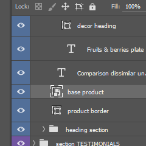
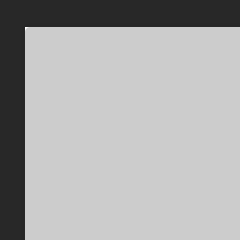
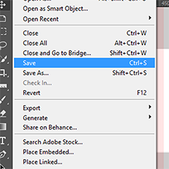
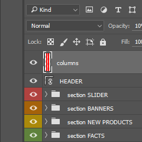

Slabb
Creative Portfolio PSD Template
Thank you for purchasing our item. If you have any questions that are beyond the scope of this help file, please feel free to email via our user page contact form. Thanks so much!
-
13 PSD Files
-
3 Portfolio showcase variations
-
Blog pages included
-
Irregular portfolio grid
-
Pixel perfect design
-
Fullscreen 5 column grid system
-
Ultra modern, clean design
-
Detailed UI
-
Retina-ready vector graphics
-
Fontawesome icons
-
Linear icons
-
Well organized layers
-
Google fonts
-
Easy-to-customize
-
01_HOMEPAGE.psd
-
02_PORTFOLIO_LIST.psd
-
03_PORTFOLIO_DETAILS_v1.psd
-
04_PORTFOLIO_DETAILS_v2.psd
-
05_PORTFOLIO_DETAILS_v3.psd
-
06_SERVICES.psd
-
07_BLOG.psd
-
08_BLOG_SINGLEPOST.psd
-
09_BLOG_TYPOGRAPHY.psd
-
10_ABOUT.psd
-
11_CONTACTS.psd
-
12_404_PAGE.psd
-
13_MENU.psd
How to insert your image to placeholder?
By default the template contains gray rectangles which you can replace with your images.
-
Choose "Move tool" in Adobe Photoshop panel.
-
Find and click on the gray rectangle you wish to replace with your image.
-
In "Layers" panel the selected layer should be highlighted. Now make a double-click on this smart object.
-
You will have opened the smart object as a *.psb file. Now simply insert your content here. After you finish don't forget to save this file by clicking File > "Save".
-
All changes you made with the smart object will be reflected in the main PSD file.
  
How to enable Bootstrap grid?
Each PSD file contains the top layer called "columns". Simply make it visible to enable Boostrap columns grid.

Adobe Photoshop couldn't find fonts used in the PSD files. How can I get them?
Take a look to the credits section of this documentation. You can download all necessary fonts fo free at Google Fonts.
Fonts used:
Included vector graphics: